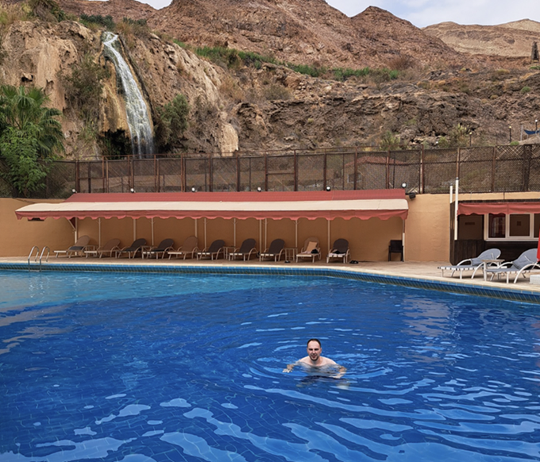

Hobby's/Interesses
Computer. 
Linux. 
Photoshop. 
Visual Code. Dreamweaver. 
Bitcoin. |
IT en TechThe internet of things en vooral de technologie erachter interesseert mij enorm en dit al van toen ik jong was. In mijn jeugdige jaren kon ik al websites maken met Flash, PHP en SQL. Ook heb ik een hele tijd als tiener met een dualboot (Ubuntu)Linux en Windows gewerkt gewoon omdat ik benieuwd was wat de verschillen waren tussen beide. Flash, PHP, SQL heb ik zelf geleerd uit interesse als tiener zonder dit op school voor mijn kiezen te krijgen. Uiteraard wil ik in de toekomst veel bijleren en wil ik nog beter worden in zowel websites als programmeren. Om dit te bereiken volg ik momenteel de opleiding: "Graduaat Programmeren". |
ReizenOp reis gaan doe ik ontzettend graag, liefst van al een actieve vakantie. Ik hou er van om nieuwe plekken te ontdekken, mooie natuur en geschiedkundige plaatsen te bezoeken. Het allerliefst plan ik mijn vakantie zelf en bezoek ik meerdere locaties en hotels op 1 reis. Heb je interesse om ergens heen te gaan en wil je wat info; vraag het me gerust en ik help je met plezier... Op het einde van mijn reizen maak ik steevast een vakantieboek om zelfs na mijn reis nog mooie herrineringen te kunnen ophalen. In mijn vrije tijd probeer ik nog een beetje Spaans bij te leren omdat ik zeker nog van plan ben om nog wat meer landen in Zuid-Amerika te bezoeken en het toch altijd wat leuker is dat je met de locals in hun eigen taal kan praten. Helaas is de lijst van landen die ik nog wil bezoeken zo groot dat ik altijd keuzestress heb welk land ik als volgende moet kiezen. Voor 2024 heb ik echter al Argentinië, Portugal en Madeira gepland, doordat ik mijn reizen goed voorbereid, heb ik van te voren al wel wat werk en tijd nodig om de optimale route te plannen, ook hou ik er van dat alles netjes gepland is tijdens de reis zodat ik mij ter plekke weinig zorgen moet maken of tijd moet verliezen met opzoekwerk. Bezochte plekken: België, Nederland, Duitsland, Luxemburg, Frankrijk, Spanje, Zwitserland, Denemarken, Tsjechië, Oostenrijk, Italië, Slovenië, Kroatië, Noorwegen, Zweden, Finland, Estland, Letland, Litouwen, Ijsland, Peru, Bolivië, Chili & Jordanië. |

Zwemmen. Bergbeklimmen. 
Canyonining. Fietsen. 
Lopen. Duiken. |
SportIk ben graag actief, een gezonde geest in een gezond lichaam zoals de romeinen zeggen... Voorlopig doe ik alleen sport in recreatief verband, de enige wedstrijden waar ik aan meedoe zijn de Antwerp 10 miles, al hoop ik toch ook een keer met de Titan Run mee te doen. Ik heb een tijdje aan fitness gedaan, maar helaas ben ik hier mee gestopt toen mijn beste vriend hier mee stopte en ik zelf ook weinig tijd begon te hebben. Ik hoop echter dit in de toekomst nog opnieuw te kunnen hervatten. Ik ga graag lopen, zwemmen, wandelen, badminton, squash, canyoning, fitness... Waarschijnlijk een hele boel extra sporten zal ik leuk vinden eens ik er aan begin. Op de foto zie je mij aan canyoning doen in Jordanië, helaas is dit een activiteit die iets moeilijker te doen is in België, des te harder geniet ik er dan maar van als ik dit op reis kan inplannen. Wandelen vind ik vooral fijn in een groene of nieuwe omgeving, liefst in de bergen zodat de intensiteit net wat hoger ligt. |